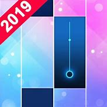
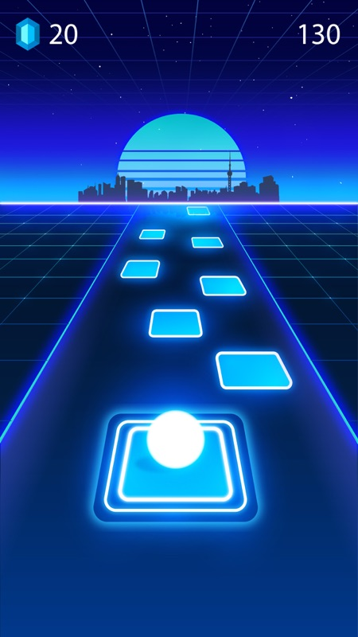
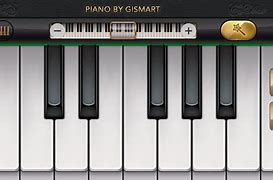

# PIANO GAMES MINI
A Super Fun piano music game to pass your time! Piano Games Mini has many addictive mini-games. Challenge yourself following the music rhythm. In this game, you can enjoy different mini-games with wonderful piano songs. All games are matched with the rhythm of the music. Besides the piano, you can choose different musical instruments as you level up, also there are a lot of themes. Those mini-games are easy to play. The only thing you need to do is just tap to start, tap for fun! ✔Highlights: - More than 25 mini-games and we are working hard to add more - More than 60 piano melody songs, and we are adding more classical songs - More than 10 color tiles to select - Select your favorite Musical instruments - Level up system to unlock more items - Play with friends all over the world If you have any suggestions, please let us know.
# TILES HOP
HOT! HOT! HOT! Monstercat is going online. Play your favorite songs with our newest character. Try to get the highest scores with the FANTASTIC game ever! Heard About EDM Tiles? With Tiles Hop: EDM Rush! you can play various types of music, from beautiful Piano, Guitar songs to Rock and EDM masterpieces. How to play 1. Touch, Hold and Drag the ball to make it jump on the Tiles. 2. Don't Miss the Tiles! 3. You can now upload your own songs to play 4. Enjoy the awesome music and addictive challenges designed for each song. The Ball will jump on the Beats Drop. Listen to the magic beat, follow the rhythm and use your musical reflexes to guide the ball from tiles to tiles. Do not Tap! This is not a Tap Tap game. Don't forget to make insane combos and beat your friend's scores! Hit Songs + Ball Game + Tiles = Awesomeness Game features - Auto-generated content: upload your favorite songs to bounce to the music - One-touch control, easy to play - Breathtaking 3D visual and effects - 30+ absolutely beautiful and fun songs to relax - 20+ Different backgrounds to truly bring you a new experience every plays! - Collect beautiful skins for your dancing balls - Beat your own top score and dare your best friends for a challenge - Share your record with your friends, and compare it with worldwide players on the ranking list! - Connect with Facebook account and sync the saved progress across multiple devices Bounce off the magic music tiles, listen to the beat, and make as many hops as you can in this mind-blowing music game now for Free! This game will create the whole new experience for music game fan. Tiles Hop: EDM Rush! is totally Free! Play this EDM music Running Game now!
# PIANO
Learn how to play the piano like a maestro in no time! Play thousands of piano classics for free on your ultra realistic piano keyboard with HD music sound. Discover of the best music apps of the Play Store. Piano by MWM is a fast and simple way to learn how to play songs, no tutorial needed you just play awesome music games and learn in a fun way and for free. Play the games, try to get all notes perfectly to reach the higher score and be the one and only piano maestro. Learning a new song has never been that simple! New songs are added on the playbook every week for you to keep practicing. Feeling like a maestro already? Start composing your own music with the free play mode and the simple or double keyboard! The app also offers a Metronome, pedal, dual scrollable keyboard...everything feels like a real piano, and you won't need to download other apps. Main features of the app: *Ultra-realistic piano keyboard *7 different piano keyboard and musical instruments: Grand Piano, Vintage Piano, Harp, Electric Piano, Xylophone, Church Organ, Harpsichord *Simple or Double scrollable keyboard *Free songs *Thousands classic piano songs to learn and become a music maestro *Pro metronome *Simple free lessons in the form of music games Have any question or suggestion regarding the app? Our support team is ready to help at support-piano@mwmapps.com Check our developer profile to discover our other apps and learn more about us :)